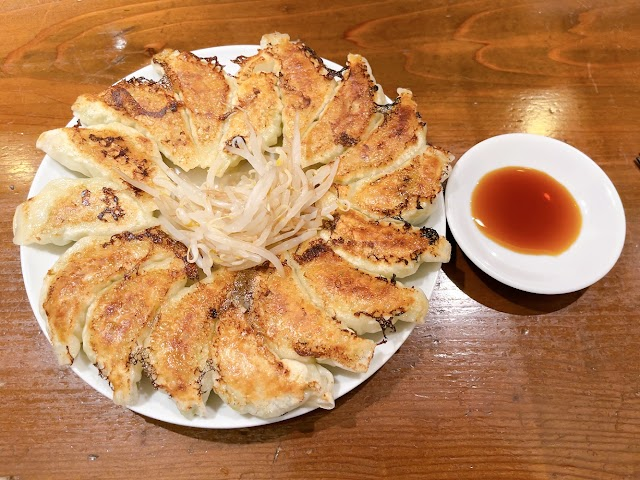
| 営業時間 | 水・木・金・土 11:30〜14:00, 17:00〜20:30 ／ 日 11:30〜14:00 |
|---|---|
| 定休日 | 月・火曜 |
| 住所 | 静岡県浜松市中央区砂山町３５６−５ |
| 予約 | 要確認 — ☎ 053-455-1700 ／ 公式サイト |
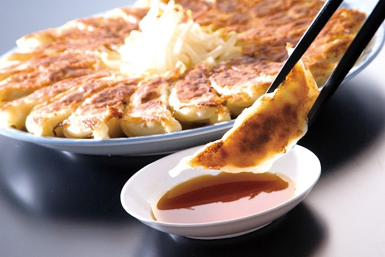
| 営業時間 | 月・火・水・木・金 11:00〜14:30, 17:00〜20:30 ／ 土・日 11:00〜21:30 |
|---|---|
| 定休日 | なし(要最終確認) |
| 住所 | 静岡県浜松市浜名区平口２５２−１ |
| 予約 | 要確認 — ☎ 053-586-8522 ／ 公式サイト |
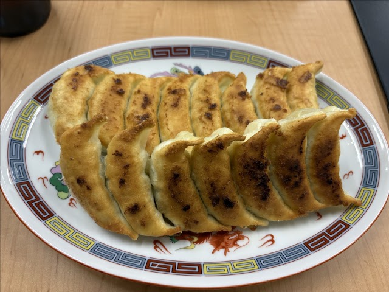
| 営業時間 | 月・木・金・土・日 11:00〜20:25 |
|---|---|
| 定休日 | 火・水曜 |
| 住所 | 静岡県浜松市中央区佐藤１丁目２５−８ |
| 予約 | 要確認 — ☎ 053-461-6501 ／ 公式サイト |
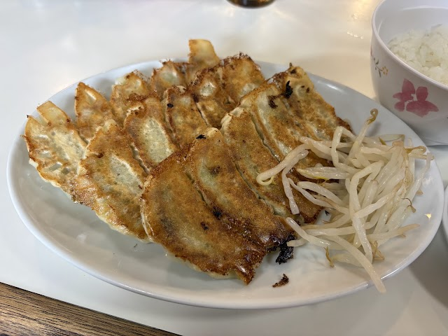
| 営業時間 | 月・火・水・金・土・日 11:30〜14:30, 16:30〜21:00 |
|---|---|
| 定休日 | 木曜 |
| 住所 | 静岡県浜松市中央区増楽町５６３−３ |
| 予約 | 要確認 — ☎ 053-447-5737 |
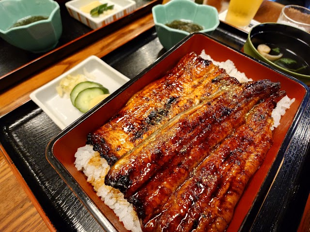
| 営業時間 | 火・水・木・金・土・日 11:00〜20:00 |
|---|---|
| 定休日 | 月曜 |
| 住所 | 静岡県浜松市中央区板屋町６５５ |
| 予約 | 可 — ☎ 053-452-5687 ／ 公式サイト |
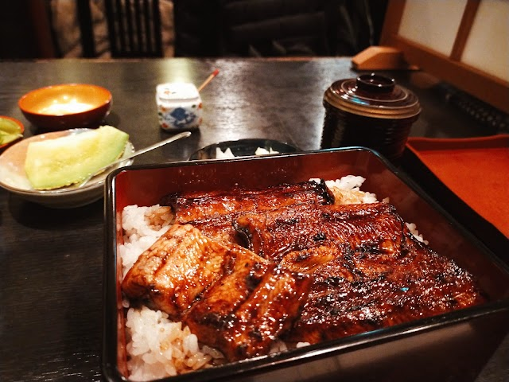
| 営業時間 | 月・木・金・土・日 11:30〜13:30, 17:15〜19:30 |
|---|---|
| 定休日 | 火・水曜 |
| 住所 | 静岡県浜松市中央区千歳町７０ |
| 予約 | 可 — ☎ 053-455-1460 ／ 公式サイト |
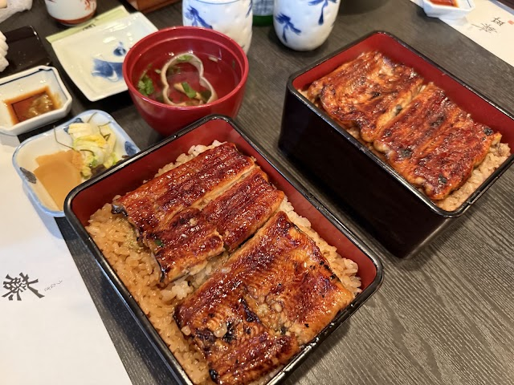
| 営業時間 | 月・水・木・金・土・日 11:00〜14:00, 17:00〜21:00 |
|---|---|
| 定休日 | 火曜 |
| 住所 | 静岡県浜松市中央区砂山町３２２−７ 2F |
| 予約 | 可 — ☎ 053-452-3232 ／ 公式サイト |
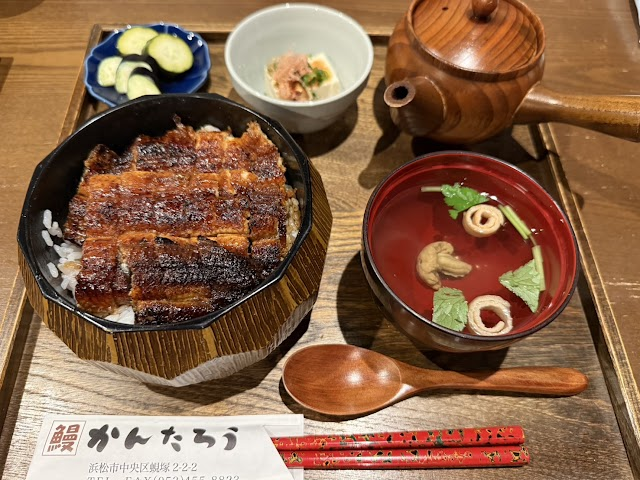
| 営業時間 | 月・火・水・木・金・土 11:00〜14:00, 17:00〜20:00 |
|---|---|
| 定休日 | 日曜 |
| 住所 | 静岡県浜松市中央区蜆塚２丁目２−２ |
| 予約 | 可 — ☎ 053-455-8823 ／ 公式サイト |
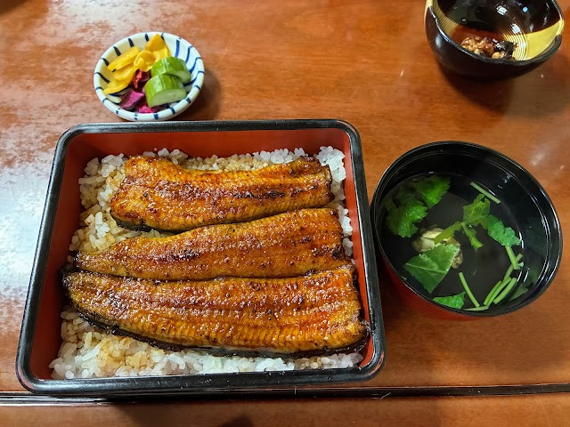
| 営業時間 | 月・火・木・金・土・日 11:00〜15:00 |
|---|---|
| 定休日 | 水曜 |
| 住所 | 静岡県浜松市浜名区細江町気賀２３８−２ |
| 予約 | 要確認 — ☎ 053-522-0063 ／ 公式サイト |
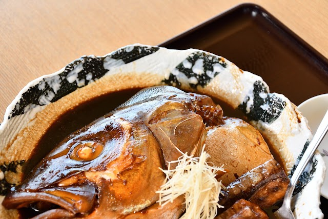
| 営業時間 | 月・火・水・木・金・土・日 11:00〜14:00, 16:30〜20:00 |
|---|---|
| 定休日 | なし(要最終確認) |
| 住所 | 静岡県浜松市中央区舞阪町舞阪２１１９−１２ |
| 予約 | 可 — ☎ 053-592-0041 ／ 公式サイト |
| 営業時間 | 月・水・木・金・土・日 11:30〜14:00, 17:00〜20:30 |
|---|---|
| 定休日 | 火曜 |
| 住所 | 静岡県浜松市中央区舞阪町弁天島３１０１ |
| 予約 | 可 — 公式サイト |
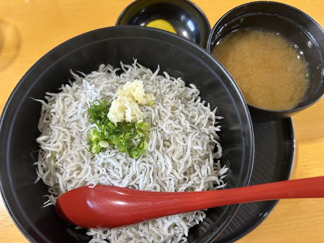
| 営業時間 | 月・火・金・日 10:00〜16:00 ／ 土 10:00〜16:00, 17:00〜21:00 |
|---|---|
| 定休日 | 水・木曜 |
| 住所 | 静岡県浜松市中央区舞阪町舞阪２６２１−１１４ |
| 予約 | 要確認 — ☎ 053-592-2340 ／ 公式サイト |
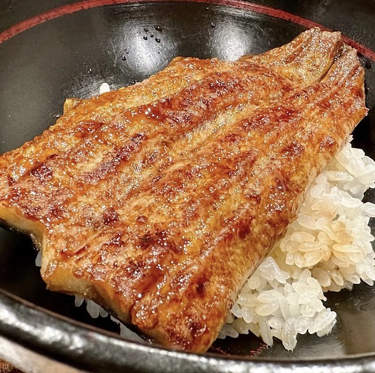
| 営業時間 | 月・火・水・木・金・土・日 18:00〜23:00 |
|---|---|
| 定休日 | なし(要最終確認) |
| 住所 | 静岡県浜松市中央区元城町２２２−２５ |
| 予約 | 可 — 公式サイト |
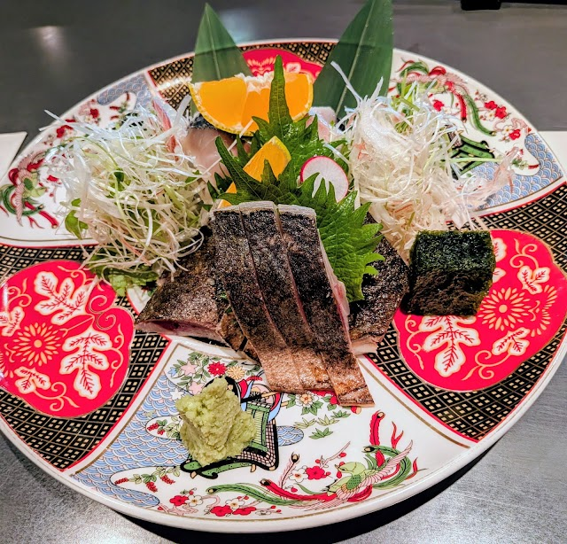
| 営業時間 | 月・火・水・木・金・土 18:00〜22:00 |
|---|---|
| 定休日 | 日曜 |
| 住所 | 静岡県浜松市中央区田町２３１−１ |
| 予約 | 可 — ☎ 053-455-2832 ／ 公式サイト |
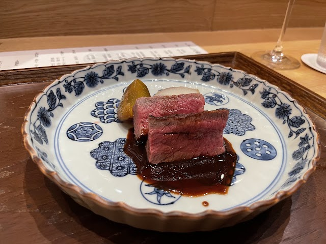
| 営業時間 | 月・火・水・木・金・土 17:00〜23:00 |
|---|---|
| 定休日 | 日曜 |
| 住所 | 静岡県浜松市中央区千歳町３９ |
| 予約 | 可 — ☎ 053-488-4939 ／ 公式サイト |
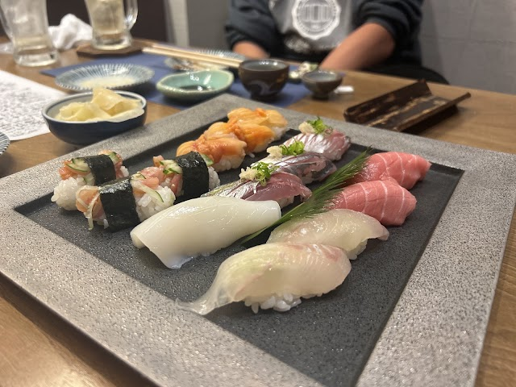
| 営業時間 | 火・水・木・日 12:00〜14:30, 17:00〜23:00 ／ 金・土 12:00〜14:30, 17:00〜0:00 |
|---|---|
| 定休日 | 月曜 |
| 住所 | 静岡県浜松市中央区肴町３１６−４４ |
| 予約 | 可 — ☎ 053-452-1768 ／ 公式サイト |
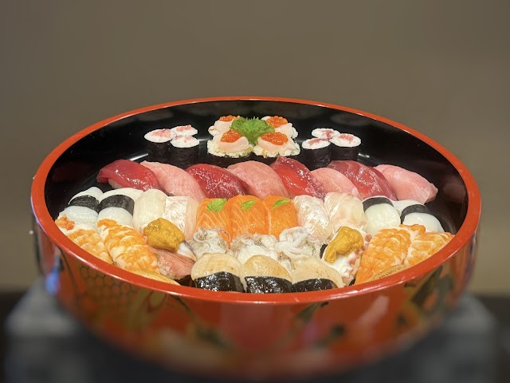
| 営業時間 | 月・木・土・日 11:30〜13:15, 17:30〜21:00 ／ 金 11:30〜13:00, 17:30〜21:00 |
|---|---|
| 定休日 | 火・水曜 |
| 住所 | 静岡県浜松市中央区砂山町３６０−６ |
| 予約 | 可 — ☎ 053-452-6288 ／ 公式サイト |
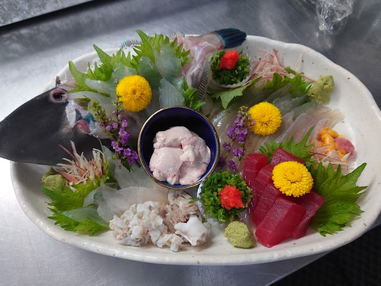
| 営業時間 | 月・火・水・木・金・土 17:00〜1:00 |
|---|---|
| 定休日 | 日曜 |
| 住所 | 静岡県浜松市中央区千歳町３５ 千歳きくいち |
| 予約 | 可 — ☎ 053-452-5666 ／ 公式サイト |
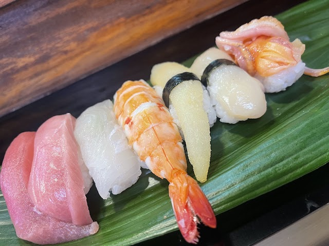
| 営業時間 | 月・木・金・土・日 10:00〜21:00 ／ 火 10:00〜20:00 |
|---|---|
| 定休日 | 水曜 |
| 住所 | 静岡県浜松市中央区舘山寺町２２８２ |
| 予約 | 可 — ☎ 053-487-1534 ／ 公式サイト |
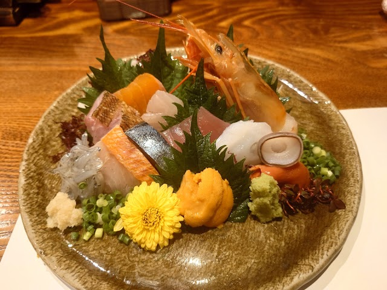
| 営業時間 | 月・火・水・木・金・土 17:00〜23:00 |
|---|---|
| 定休日 | 日曜 |
| 住所 | 静岡県浜松市中央区肴町３１８−２８ ペッシェビル ３Ｆ |
| 予約 | 可 — ☎ 053-458-6343 ／ 公式サイト |
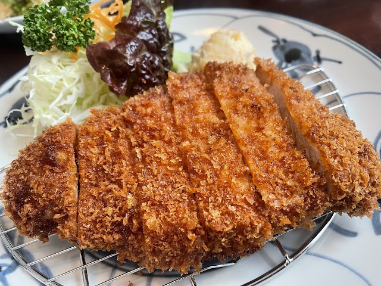
| 営業時間 | 月・木・金・土・日 11:30〜14:00 |
|---|---|
| 定休日 | 火・水曜 |
| 住所 | 静岡県浜松市中央区上新屋町２３１−５ |
| 予約 | 要確認 — ☎ 053-464-7845 |
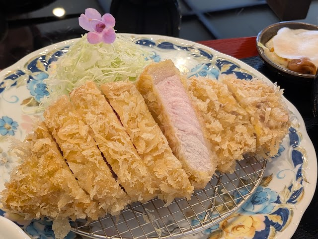
| 営業時間 | 月・火・木・金・土 11:30〜14:00, 17:30〜21:00 ／ 日 11:30〜14:30, 17:30〜21:00 |
|---|---|
| 定休日 | 水曜 |
| 住所 | 静岡県浜松市中央区高林２丁目８−３０ |
| 予約 | 可 — ☎ 053-474-3335 |
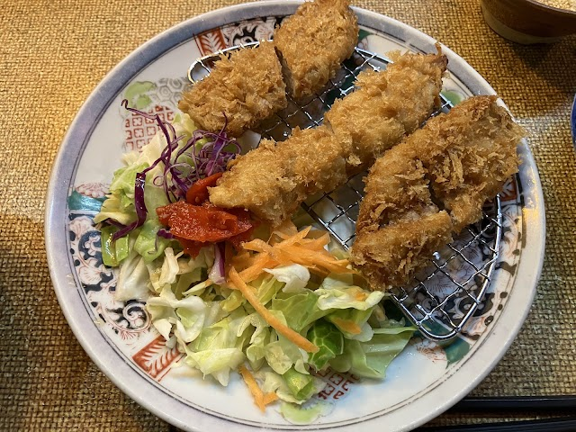
| 営業時間 | 水・木・金・土・日 11:30〜14:00, 17:30〜20:20 |
|---|---|
| 定休日 | 月・火曜 |
| 住所 | 静岡県浜松市中央区海老塚１丁目８−２ |
| 予約 | 要確認 — ☎ 053-455-3656 |
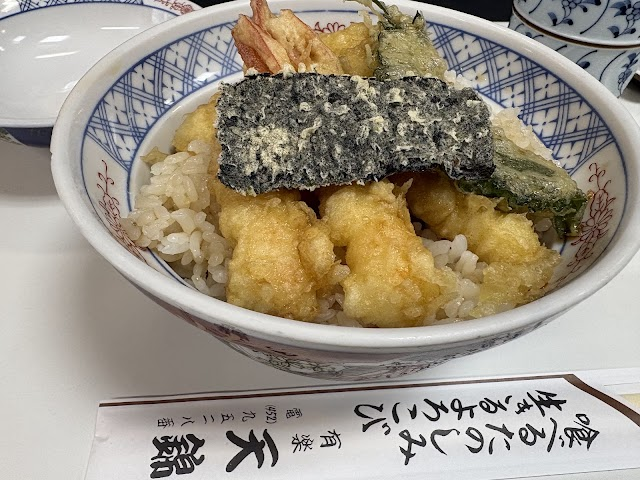
| 営業時間 | 月・火・金・土・日 11:00〜13:30, 17:00〜19:30 ／ 木 11:00〜13:00, 17:00〜19:30 |
|---|---|
| 定休日 | 水曜 |
| 住所 | 静岡県浜松市中央区田町３２５−２９ |
| 予約 | 可 — ☎ 053-452-9528 |
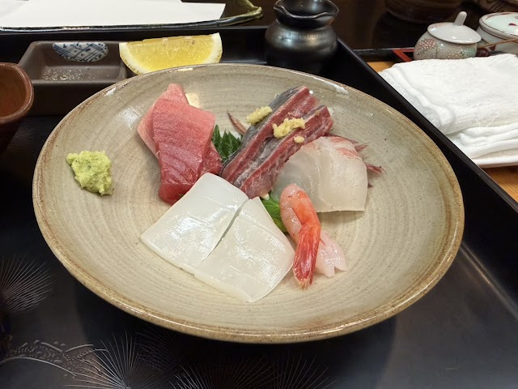
| 営業時間 | 月・火・水・木・金・土 18:00〜22:00 |
|---|---|
| 定休日 | 日曜 |
| 住所 | 静岡県浜松市中央区千歳町１１ |
| 予約 | 可 — ☎ 053-452-2228 |
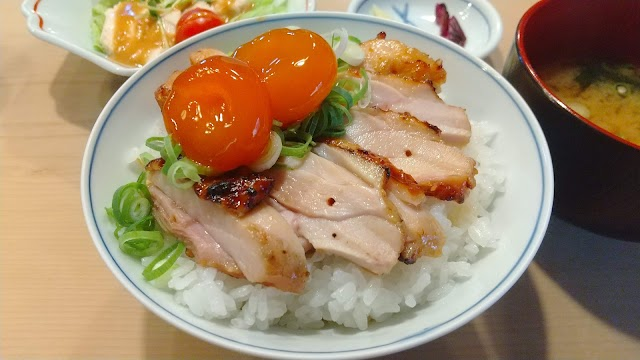
| 営業時間 | 月・火・土 17:00〜22:00 ／ 水・木・金 11:30〜13:00, 17:00〜22:00 |
|---|---|
| 定休日 | 日曜 |
| 住所 | 静岡県浜松市中央区千歳町５６ |
| 予約 | 可 — ☎ 053-453-2203 ／ 公式サイト |
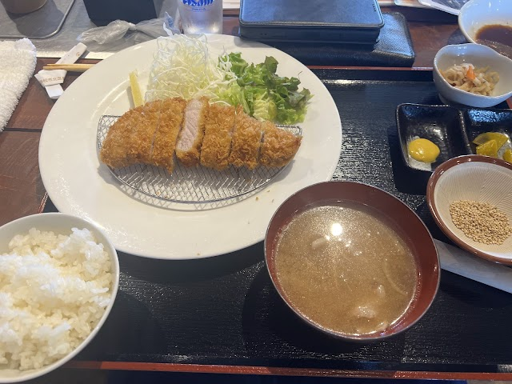
| 営業時間 | 月・木・金・土・日 11:00〜15:00, 17:00〜20:30 |
|---|---|
| 定休日 | 火・水曜 |
| 住所 | 静岡県浜松市浜名区細江町中川１１９０−１ |
| 予約 | 可 — ☎ 053-522-2969 ／ 公式サイト |
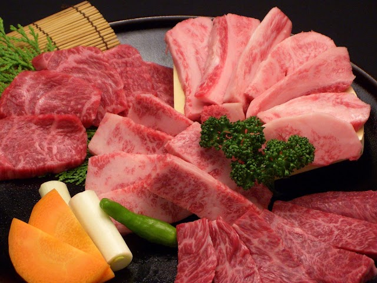
| 営業時間 | 月・火・水・木・金 17:00〜23:00 ／ 土・日 11:30〜14:30, 16:00〜23:00 |
|---|---|
| 定休日 | なし(要最終確認) |
| 住所 | 静岡県浜松市中央区中田町８５ |
| 予約 | 可 — ☎ 053-460-1129 ／ 公式サイト |
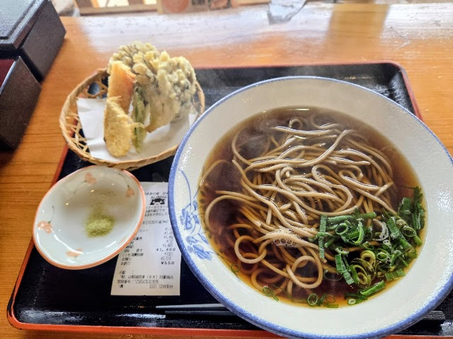
| 営業時間 | 月・火・金・土・日 11:00〜15:00 |
|---|---|
| 定休日 | 水・木曜 |
| 住所 | 静岡県浜松市天竜区熊１９７６−１ |
| 予約 | 要確認 — ☎ 053-929-0623 |
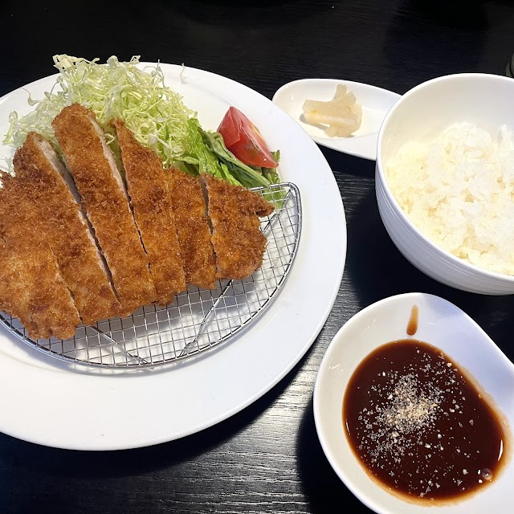
| 営業時間 | 火・水・木・金 11:30〜14:00, 17:00〜21:00 ／ 土・日 11:30〜14:00, 17:00〜20:30 |
|---|---|
| 定休日 | 月曜 |
| 住所 | 静岡県浜松市中央区篠ケ瀬町１３４０−１ |
| 予約 | 可 — ☎ 053-460-5375 ／ 公式サイト |
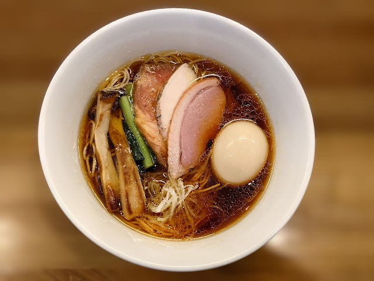
| 営業時間 | 月・木・金・土・日 11:00〜15:00 |
|---|---|
| 定休日 | 火・水曜 |
| 住所 | 静岡県浜松市中央区天王町１４０７−１ |
| 予約 | 要確認 — ☎ 053-589-5607 |
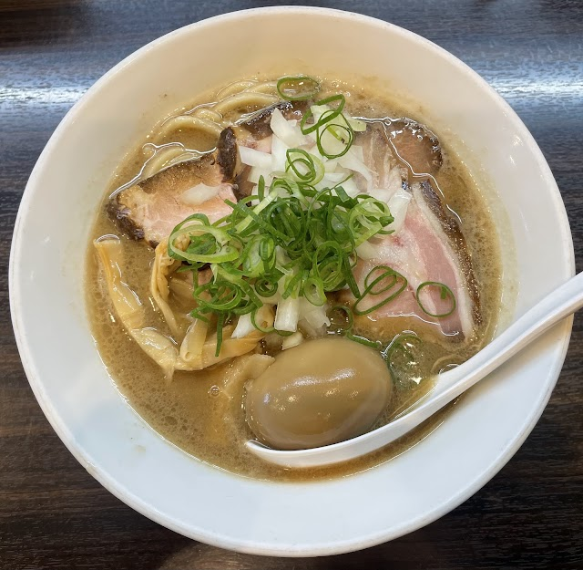
| 営業時間 | 水・木・金 11:00〜14:30 ／ 土・日 11:00〜15:00 |
|---|---|
| 定休日 | 月・火曜 |
| 住所 | 静岡県浜松市中央区高林１丁目８−１ |
| 予約 | 要確認 — ☎ 053-523-8393 |
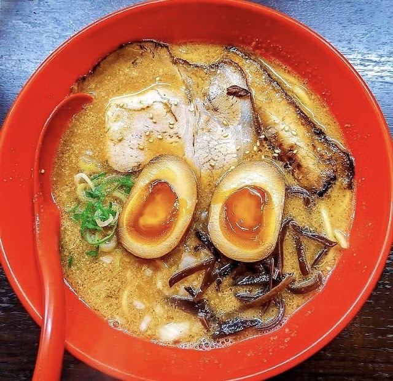
| 営業時間 | 月・水・木・金・土・日 11:00〜14:00, 17:00〜20:00 |
|---|---|
| 定休日 | 火曜 |
| 住所 | 静岡県浜松市中央区大山町２７９６−３ |
| 予約 | 要確認 — ☎ 090-4266-5553 ／ 公式サイト |
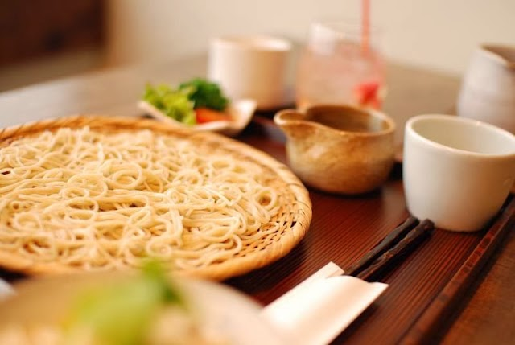
| 営業時間 | 火・水・木・金・土 11:30〜14:00, 18:00〜21:00 ／ 日 11:30〜14:00 |
|---|---|
| 定休日 | 月曜 |
| 住所 | 静岡県浜松市中央区板屋町１０２−１２ 2F |
| 予約 | 可 — ☎ 053-453-7707 ／ 公式サイト |
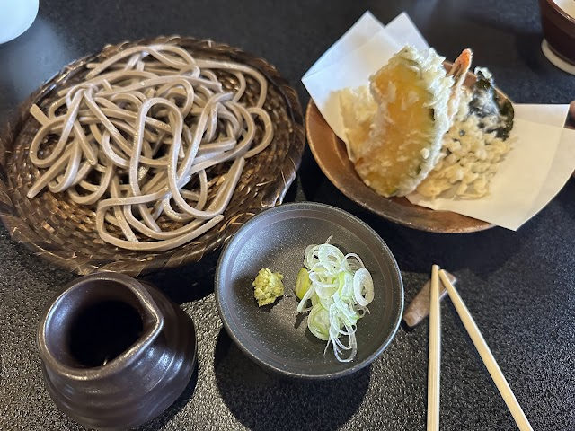
| 営業時間 | 月・火・金・土・日 11:00〜14:30 |
|---|---|
| 定休日 | 水・木曜 |
| 住所 | 静岡県浜松市天竜区横川１６０ |
| 予約 | 可 — ☎ 053-924-0088 ／ 公式サイト |
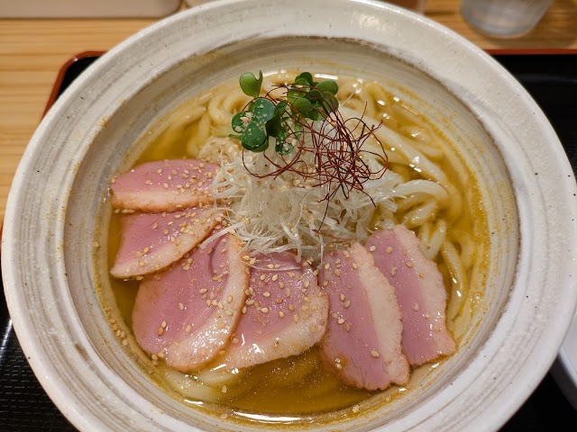
| 営業時間 | 月・水・金・土 11:00〜14:00, 17:30〜20:30 ／ 日 11:00〜14:00, 18:00〜20:30 |
|---|---|
| 定休日 | 火・木曜 |
| 住所 | 静岡県浜松市中央区葵西３丁目１６−７８ |
| 予約 | 要確認 — ☎ 053-439-9170 ／ 公式サイト |
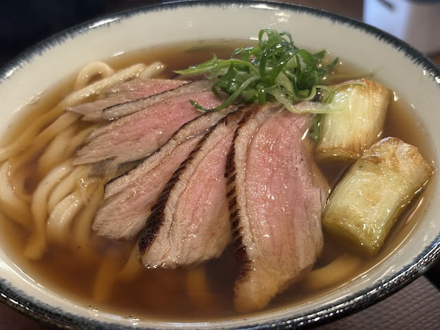
| 営業時間 | 月・木・金・土 10:45〜14:30 |
|---|---|
| 定休日 | 火・水・日曜 |
| 住所 | 静岡県浜松市浜名区三ヶ日町都筑１１７０−１０ |
| 予約 | 要確認 — ☎ 053-526-1020 ／ 公式サイト |
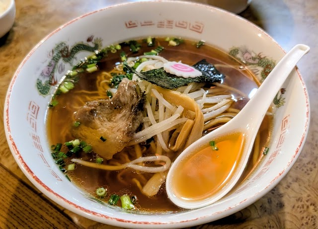
| 営業時間 | 月・水・木・金・土・日 11:30〜14:00, 17:00〜20:30 |
|---|---|
| 定休日 | 火曜 |
| 住所 | 静岡県浜松市中央区新橋町１４９５ |
| 予約 | 要確認 — ☎ 053-447-1946 |
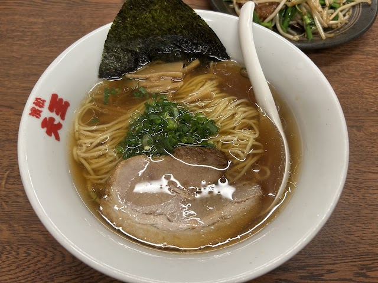
| 営業時間 | 月・火・水・木 11:30〜15:00, 18:00〜2:30 ／ 金・土 11:30〜15:00, 18:00〜3:30 |
|---|---|
| 定休日 | 日曜 |
| 住所 | 静岡県浜松市中央区田町３２３−１２ |
| 予約 | 要確認 — ☎ 053-522-8812 ／ 公式サイト |
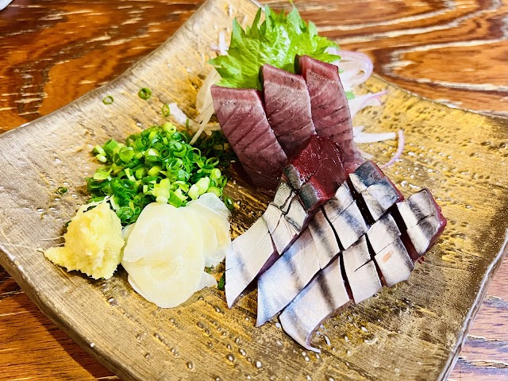
| 営業時間 | 月・火・水・木 18:00〜23:00 ／ 金・土 18:00〜23:30 |
|---|---|
| 定休日 | 日曜 |
| 住所 | 静岡県浜松市中央区田町３２３−４ |
| 予約 | 可 — ☎ 053-456-7025 ／ 公式サイト |
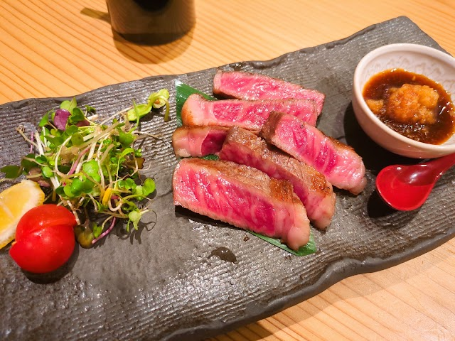
| 営業時間 | 月・火・水・木・金・土 18:00〜0:00 |
|---|---|
| 定休日 | 日曜 |
| 住所 | 静岡県浜松市中央区肴町３１７−１５ |
| 予約 | 可 — ☎ 053-456-7028 ／ 公式サイト |
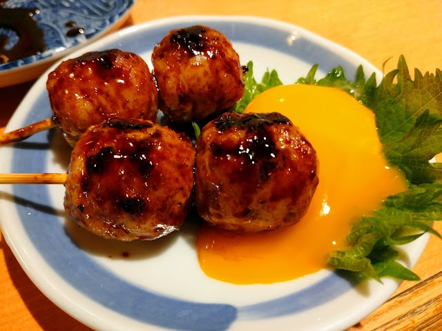
| 営業時間 | 月・火・水・木・金・土 17:30〜22:30 |
|---|---|
| 定休日 | 日曜 |
| 住所 | 静岡県浜松市中央区田町３３１−９ マルケンビル |
| 予約 | 可 — ☎ 053-452-3501 |
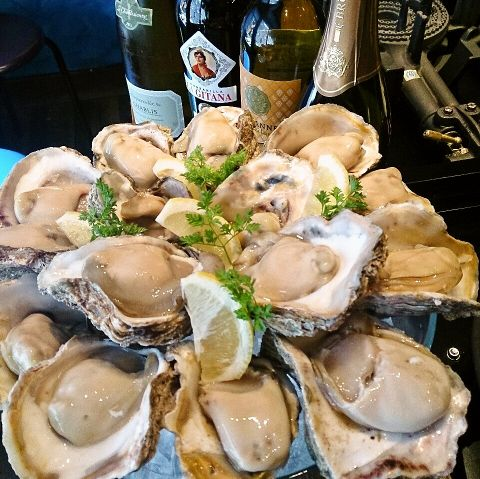
| 営業時間 | 月・火・水・木 16:00〜23:00 ／ 金 16:00〜0:00 ／ 土 12:00〜0:00 ／ 日 12:00〜22:00 |
|---|---|
| 定休日 | なし(要最終確認) |
| 住所 | 静岡県浜松市中央区肴町３１６−３６ 1Ｆ |
| 予約 | 可 — ☎ 053-482-9510 ／ 公式サイト |
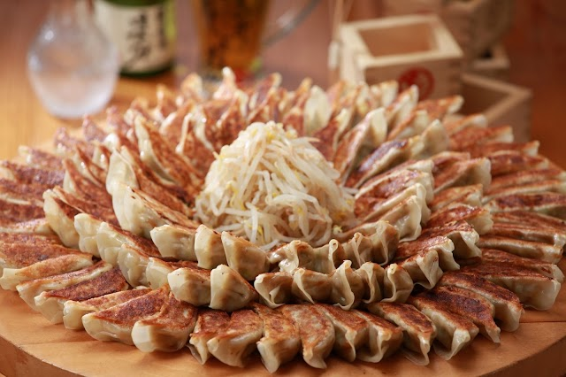
| 営業時間 | 月・火・水・木・金・土・日 15:00〜0:00 |
|---|---|
| 定休日 | なし(要最終確認) |
| 住所 | 静岡県浜松市中央区田町330‐1 マビーセブン １階 |
| 予約 | 可 — ☎ 050-5795-0544 ／ 公式サイト |
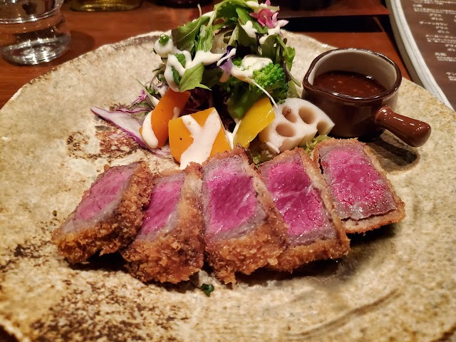
| 営業時間 | 火・水・木・金・土 17:30〜22:30 |
|---|---|
| 定休日 | 月・日曜 |
| 住所 | 静岡県浜松市中央区千歳町１２３ ハナサキビル 2階 |
| 予約 | 要確認 — ☎ 053-525-7677 ／ 公式サイト |
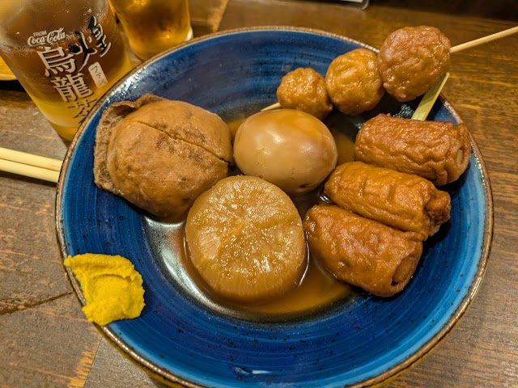
| 営業時間 | 火・水・木・金・土・日 17:40〜22:30 |
|---|---|
| 定休日 | 月曜 |
| 住所 | 静岡県浜松市中央区田町３２９−９ |
| 予約 | 可 — ☎ 053-455-1739 |
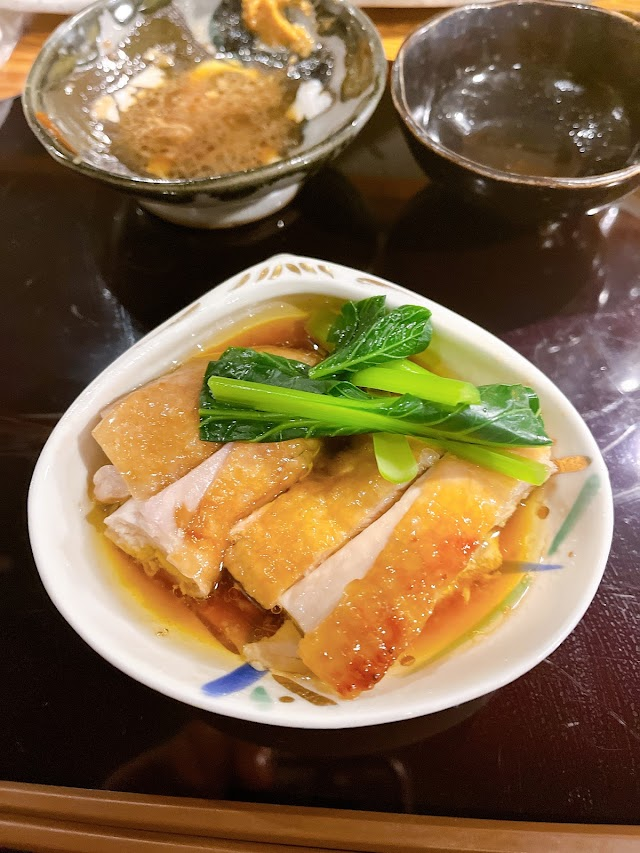
| 営業時間 | 火・水・木 17:00〜22:00 ／ 金・土 17:00〜23:00 |
|---|---|
| 定休日 | 月・日曜 |
| 住所 | 静岡県浜松市中区千歳町１０２ クラシキビル 1階 |
| 予約 | 要確認 — ☎ 053-456-7370 ／ 公式サイト |
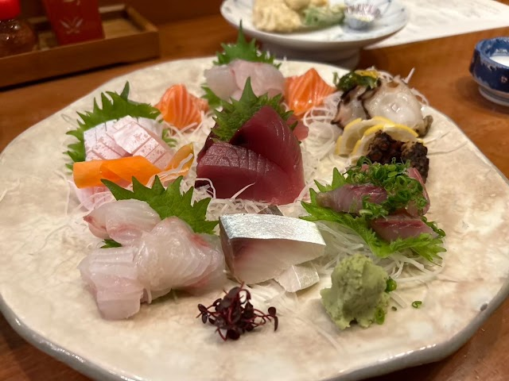
| 営業時間 | 月・火・水・木・金・土・日 11:30〜13:45, 17:00〜21:00 |
|---|---|
| 定休日 | なし(要最終確認) |
| 住所 | 静岡県浜松市中央区肴町３１８−２４ |
| 予約 | 可 — ☎ 053-452-2021 |
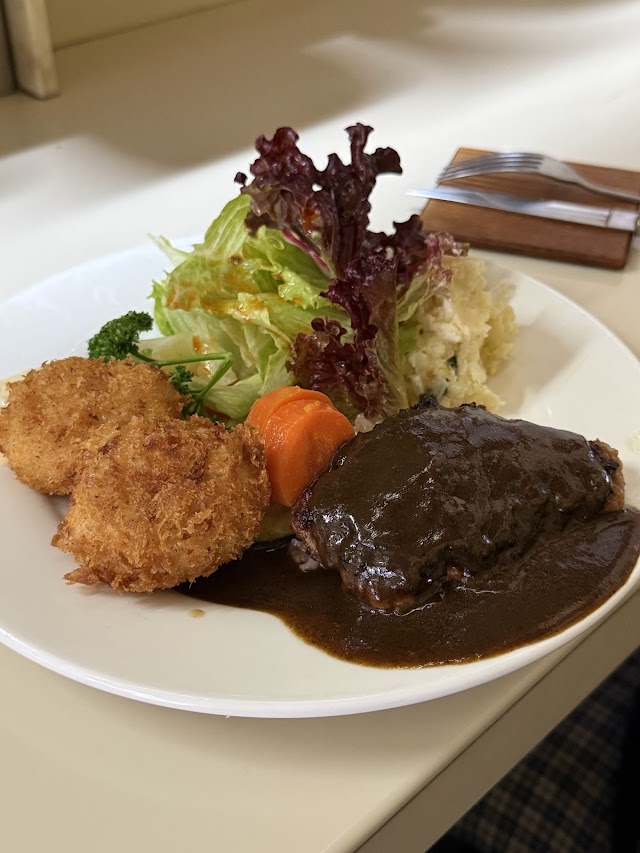
| 営業時間 | 月・水・木・金・土・日 11:30〜20:00 |
|---|---|
| 定休日 | 火曜 |
| 住所 | 静岡県浜松市中央区千歳町５７ |
| 予約 | 要確認 — ☎ 053-452-0886 |
| 営業時間 | 月・火・水・金 11:00〜14:00, 18:00〜20:30 ／ 土 11:00〜14:00, 17:00〜20:30 ／ 日 11:00〜14:00, 17:00〜20:00 |
|---|---|
| 定休日 | 木曜 |
| 住所 | 静岡県浜松市中央区篠ケ瀬町１０３８ |
| 予約 | 要確認 — ☎ 053-463-1231 ／ 公式サイト |
| 営業時間 | 火・水・木・土・日 11:00〜14:00, 17:00〜20:00 |
|---|---|
| 定休日 | 月・金曜 |
| 住所 | 静岡県浜松市中央区佐鳴台２丁目３０−１７ |
| 予約 | 可 — ☎ 053-449-1800 ／ 公式サイト |
| 営業時間 | 月・火・水・木・金 11:00〜19:00 ／ 土・日 9:00〜19:00 |
|---|---|
| 定休日 | なし(要最終確認) |
| 住所 | 静岡県浜松市中央区田町２２３−２１ １・２F |
| 予約 | 可 — ☎ 053-413-0880 ／ 公式サイト |
| 営業時間 | 月・火・木・金・土・日 11:30〜15:00, 17:30〜22:00 |
|---|---|
| 定休日 | 水曜 |
| 住所 | 静岡県浜松市中央区板屋町６２６ ２Ｆ |
| 予約 | 可 — ☎ 053-456-0125 ／ 公式サイト |
| 営業時間 | 月・水・木・金・土・日 11:30〜15:00, 18:00〜22:00 |
|---|---|
| 定休日 | 火曜 |
| 住所 | 静岡県浜松市中央区板屋町６７５ 第２ハマエイビル ２Ｆ |
| 予約 | 可 — ☎ 053-455-0321 ／ 公式サイト |
| 営業時間 | 月・火・水・木・金・土・日 11:00〜15:00, 18:00〜21:30 |
|---|---|
| 定休日 | なし(要最終確認) |
| 住所 | 静岡県浜松市中央区西ケ崎町１７９３ |
| 予約 | 可 — ☎ 053-581-9034 ／ 公式サイト |
| 営業時間 | 水・木 11:30〜14:30 ／ 金・土・日 11:30〜14:30, 17:30〜21:30 |
|---|---|
| 定休日 | 月・火曜 |
| 住所 | 静岡県浜松市中央区海老塚２丁目３−１ |
| 予約 | 可 — ☎ 053-456-3229 ／ 公式サイト |
| 営業時間 | 金 18:00〜23:00 ／ 土 11:30〜23:00 ／ 日 11:30〜22:00 |
|---|---|
| 定休日 | 月・火・水・木曜 |
| 住所 | 静岡県浜松市中央区湖東町１９４４−１ |
| 予約 | 可 — ☎ 053-486-0134 ／ 公式サイト |
| 営業時間 | 月・日 12:00〜20:00 ／ 水・金・土 12:00〜21:00 ／ 木 12:00〜16:00, 16:30〜21:00 |
|---|---|
| 定休日 | 火曜 |
| 住所 | 静岡県浜松市中央区千歳町１４ |
| 予約 | 可 — ☎ 053-455-1936 ／ 公式サイト |
| 営業時間 | 水・木・日 13:00〜19:30 ／ 金・土 13:00〜21:30 |
|---|---|
| 定休日 | 月・火曜 |
| 住所 | 静岡県浜松市中央区板屋町６２８ Ｇ．Ｇワオン浜松 2階 |
| 予約 | 要確認 — ☎ 053-455-7100 ／ 公式サイト |
| 営業時間 | 火・水・木・金・土 11:00〜17:30 |
|---|---|
| 定休日 | 月・日曜 |
| 住所 | 静岡県浜松市中央区肴町３１３−８ |
| 予約 | 要確認 — ☎ 053-453-9015 ／ 公式サイト |
| 営業時間 | 月・火・木・金・土・日 10:00〜23:00 |
|---|---|
| 定休日 | 水曜 |
| 住所 | 静岡県浜松市中央区北島町７６７ |
| 予約 | 要確認 — ☎ 053-421-4691 |
| 営業時間 | 月・火・水・金・土・日 9:00〜18:00 |
|---|---|
| 定休日 | 木曜 |
| 住所 | 静岡県浜松市浜名区三ヶ日町津々崎３４２−２ |
| 予約 | 要確認 — ☎ 053-524-2525 ／ 公式サイト |
| 営業時間 | 水・木・金・土・日 11:00〜21:30 |
|---|---|
| 定休日 | 月・火曜 |
| 住所 | 静岡県浜松市東区, 半田山５丁目１６−１７ |
| 予約 | 可 — ☎ 053-435-5644 ／ 公式サイト |
| 営業時間 | 月・火・水・木・金・土 7:30〜23:00 |
|---|---|
| 定休日 | 日曜 |
| 住所 | 静岡県浜松市中央区板屋町１０３−１０ |
| 予約 | 要確認 — ☎ 053-482-7739 |
| 営業時間 | 月・火・木・金・土・日 11:00〜20:00 ／ 水 11:00〜17:00 |
|---|---|
| 定休日 | なし(要最終確認) |
| 住所 | 静岡県浜松市中央区千歳町１０４−２ 1F |
| 予約 | 要確認 — 公式サイト |
| 営業時間 | 月・火・木・金・土・日 9:00〜18:00 |
|---|---|
| 定休日 | 水曜 |
| 住所 | 静岡県浜松市中央区神立町字袖 紫ヶ森 136番10 |
| 予約 | 要確認 — ☎ 053-545-3232 ／ 公式サイト |
| 営業時間 | 月・火・水・木・金・土・日 10:00〜17:00 |
|---|---|
| 定休日 | なし(要最終確認) |
| 住所 | 静岡県浜松市中央区神田町５５０−２ |
| 予約 | 要確認 — ☎ 053-441-0550 ／ 公式サイト |
| 営業時間 | 月・木・金・土・日 9:00〜18:00 ／ 火 9:00〜16:00 |
|---|---|
| 定休日 | 水曜 |
| 住所 | 静岡県浜松市浜名区三ヶ日町下尾奈８３−１ |
| 予約 | 要確認 — ☎ 053-525-0902 ／ 公式サイト |
| 営業時間 | 水・木・金・土・日 10:00〜18:00 |
|---|---|
| 定休日 | 月・火曜 |
| 住所 | 静岡県浜松市中央区鍛冶町３２１−１０ |
| 予約 | 要確認 — ☎ 053-453-7100 ／ 公式サイト |
| 営業時間 | 月・火・水・木・金・土・日 10:00〜18:00 |
|---|---|
| 定休日 | なし(要最終確認) |
| 住所 | 静岡県浜松市中央区神田町３６７ |
| 予約 | 要確認 — ☎ 053-441-9456 ／ 公式サイト |
| 営業時間 | 月・火・水・木・金・土・日 9:00〜18:30 |
|---|---|
| 定休日 | なし(要最終確認) |
| 住所 | 静岡県浜松市中央区大平台３丁目１−１ |
| 予約 | 要確認 — ☎ 053-485-4750 ／ 公式サイト |
| 営業時間 | 月・火・水・金・土 7:30〜13:00 |
|---|---|
| 定休日 | 木・日曜 |
| 住所 | 静岡県浜松市中央区広沢３丁目７−６ |
| 予約 | 要確認 — ☎ 053-453-0642 ／ 公式サイト |
| 営業時間 | 水・木・金・土・日 7:00〜16:00 |
|---|---|
| 定休日 | 月・火曜 |
| 住所 | 静岡県浜松市中央区上島５丁目６−２８ |
| 予約 | 要確認 — ☎ 053-476-0178 |
本ガイドは個人利用目的で作成。掲載情報は2026年8月時点の調査に基づく。写真出典: Google Maps投稿写真(©各投稿者/Google)。